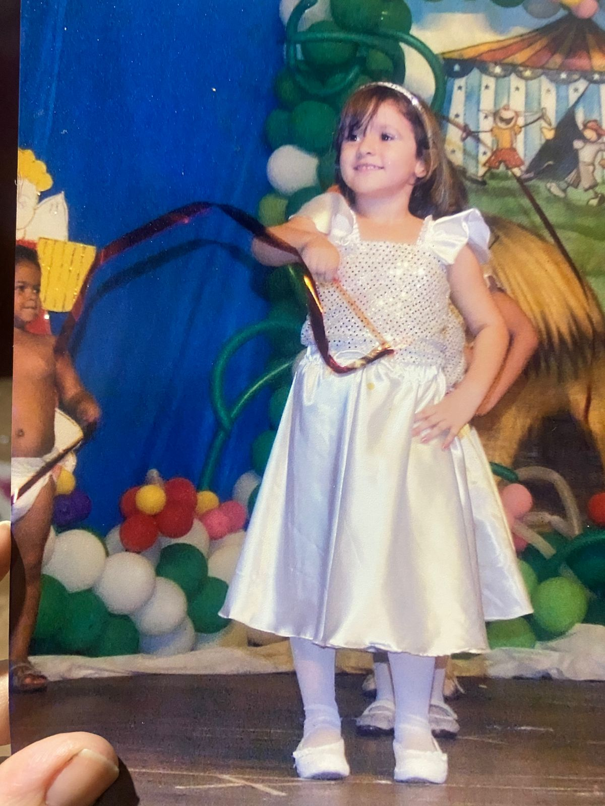
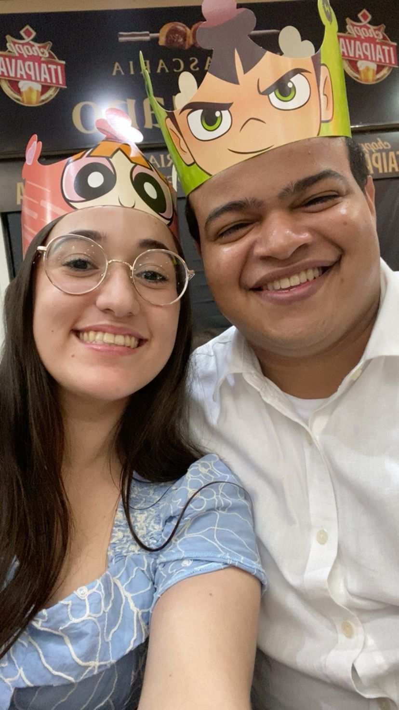
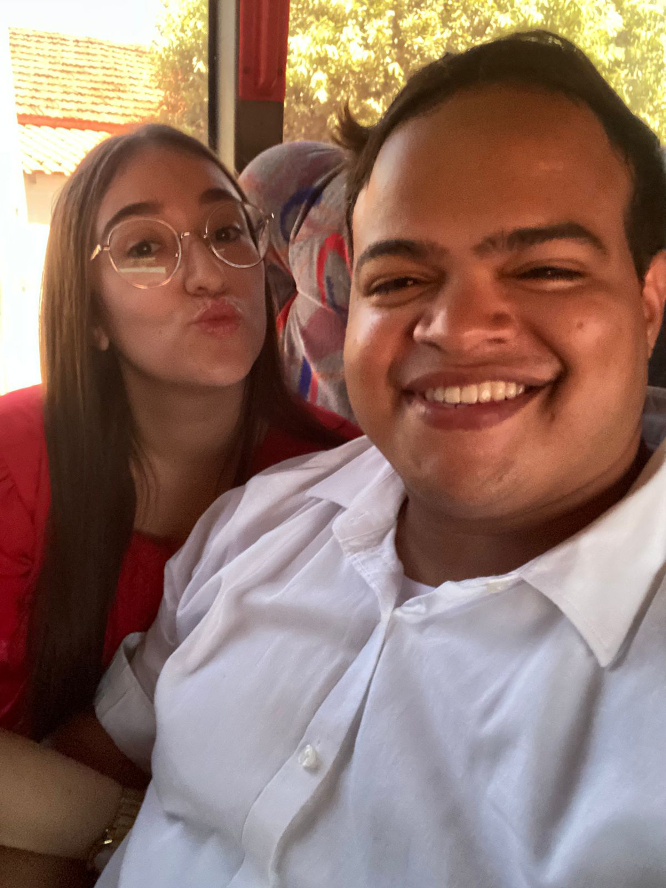
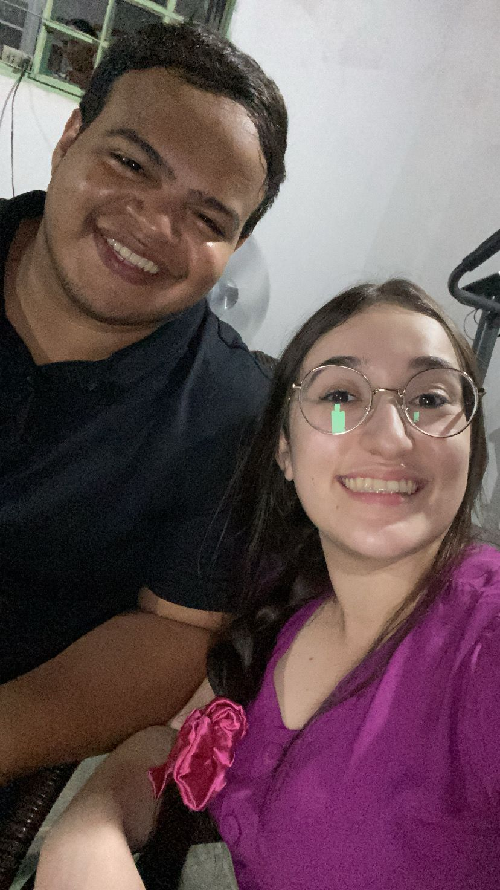
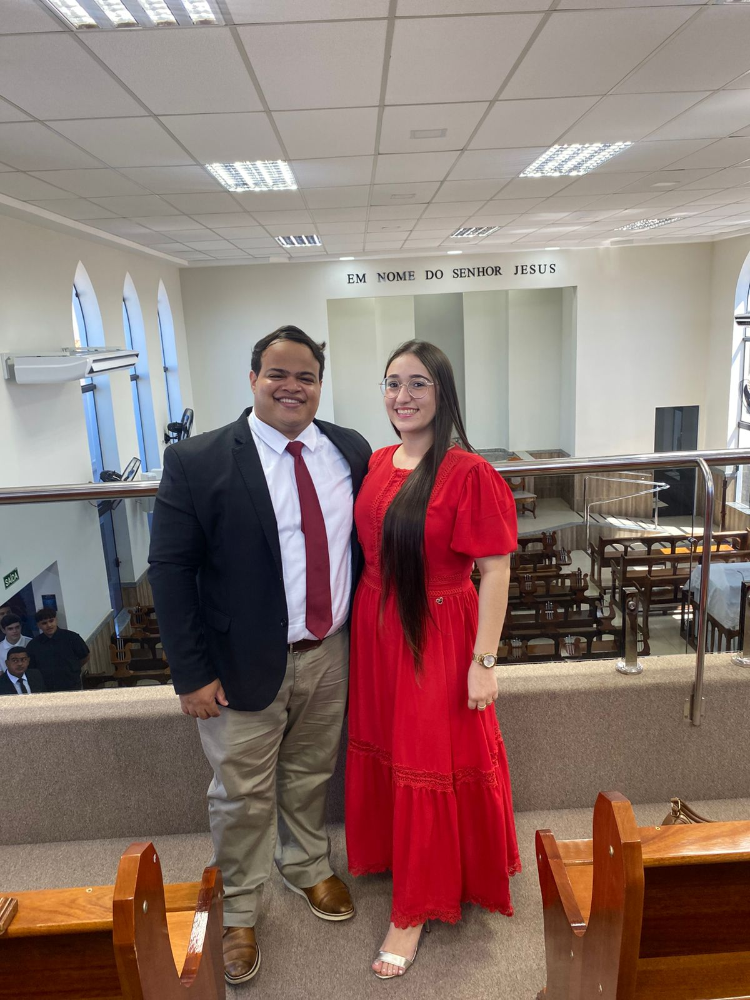
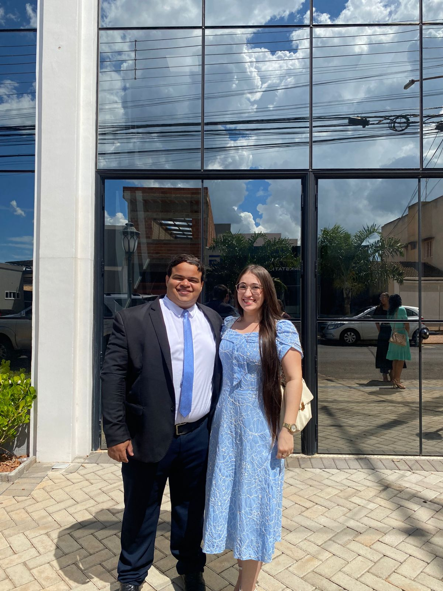
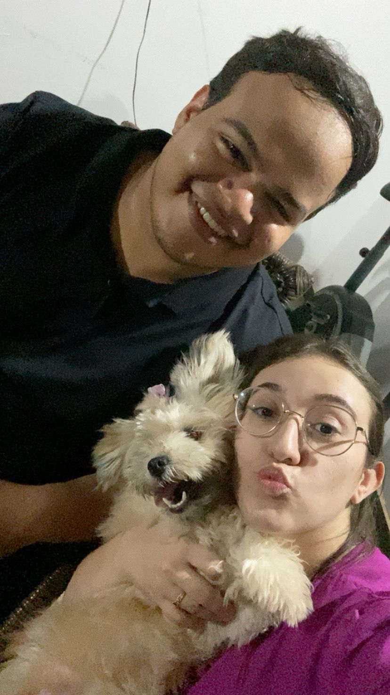
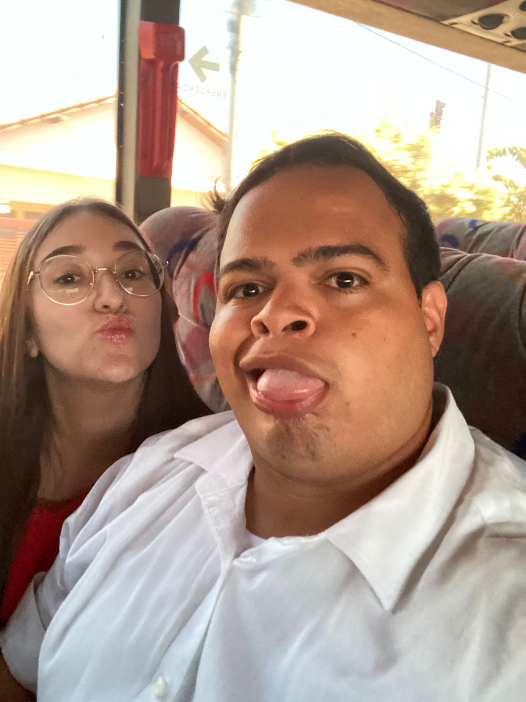

Capítulo um
01
O começo de tudo
Te conhecer foi como perceber, aos poucos, que algumas pessoas chegam com uma calma boa e fazem a vida parecer mais leve sem nem perceber.
Para um final de semana inesquecível
Um pequeno presente em forma de lembrança
Algumas conexões acontecem devagar, em detalhes quase silenciosos, até virarem exatamente o lugar onde o coração quer ficar.
Guarde cada detalhe. Esta página foi feita para ser sentida com calma.

Tudo foi acontecendo aos poucos
Entre conversas, risos, olhares e pequenas lembranças, foi nascendo uma certeza bonita: estar com você transforma o simples em especial e faz cada instante ganhar mais cor, mais leveza e mais sentido.
Esta página é só uma forma de guardar em palavras e imagens tudo aquilo que o meu coração já vinha entendendo em silêncio.
Com carinho, para você.
Nossa linha do tempo
Entre momentos simples e lembranças especiais, cada parte da nossa história foi preparando, com delicadeza, tudo o que eu sinto hoje.

Capítulo um
01
Te conhecer foi como perceber, aos poucos, que algumas pessoas chegam com uma calma boa e fazem a vida parecer mais leve sem nem perceber.

Capítulo dois
02
Houve dias que passaram rápido e, ainda assim, ficaram guardados com força. Porque quando estou com você, até o que parece pequeno se torna lembrança favorita.

Capítulo três
03
Seu jeito, sua presença, a forma como você sorri, cuida e ilumina tudo ao redor. Foi nos detalhes que eu percebi o quanto você é inesquecível para mim.

Capítulo quatro
04
Entre carinho, parceria e vontade de estar perto, fomos construindo algo bonito: um vínculo sincero, gostoso de viver e cheio de verdade.

Capítulo cinco
05
E foi assim, com delicadeza e sentimento, que cheguei neste momento com a certeza mais bonita de todas: eu quero viver algo ainda mais especial ao seu lado.
Nossas memórias
Fotos que carregam mais do que imagem: carregam presença, afeto e aquilo que fez cada momento merecer ser lembrado.


Uma mensagem para você
Você se tornou uma daquelas presenças que fazem bem de um jeito bonito, calmo e verdadeiro. Ao seu lado, eu encontro leveza nos dias comuns, alegria nas pequenas coisas e uma vontade sincera de construir memórias que continuem fazendo sentido com o tempo.
Eu admiro quem você é, o carinho que transmite, a forma como transforma momentos simples em lembranças preciosas. Gosto da nossa sintonia, do nosso cuidado, da paz e da felicidade que aparecem quando estamos juntos.
E é justamente porque tudo isso é tão real para mim que eu quis transformar esse sentimento em gesto, palavra e presença. Porque o que eu sinto por você não é pressa: é escolha, intenção e vontade de viver algo bonito, inteiro e verdadeiro.
Com todo o meu carinho.
Meu coração chegou aqui
Depois de tudo o que vivemos até aqui, existe só uma pergunta que faz sentido.
Porque, entre todos os lugares do mundo, o que mais combina com o meu coração é continuar escrevendo a nossa história bem perto de você.